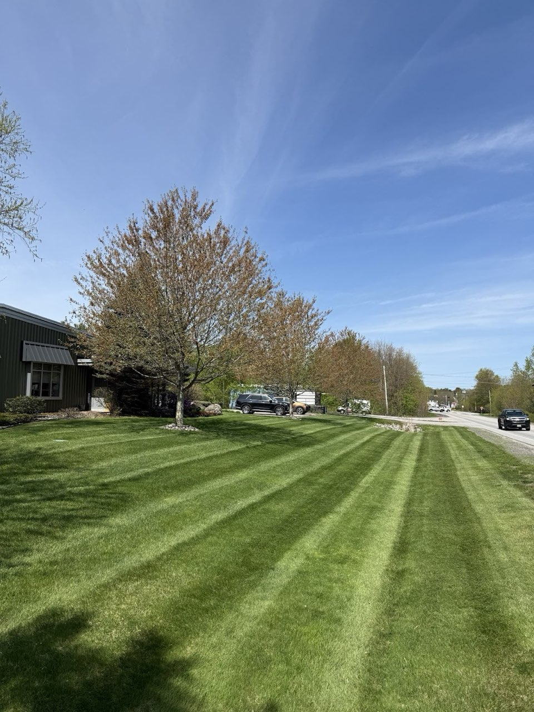
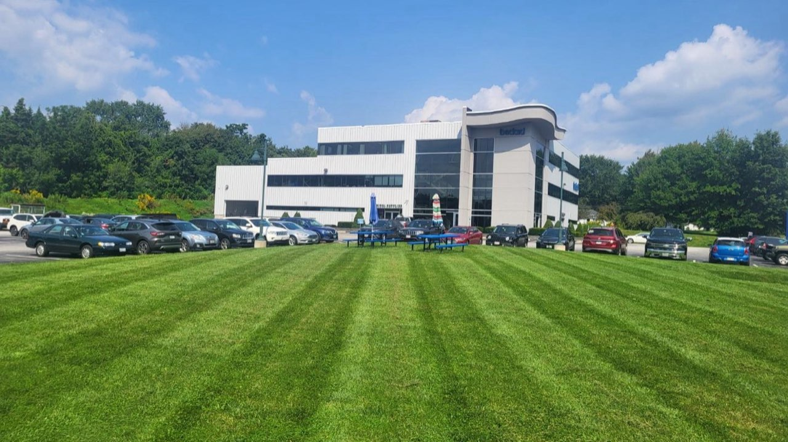
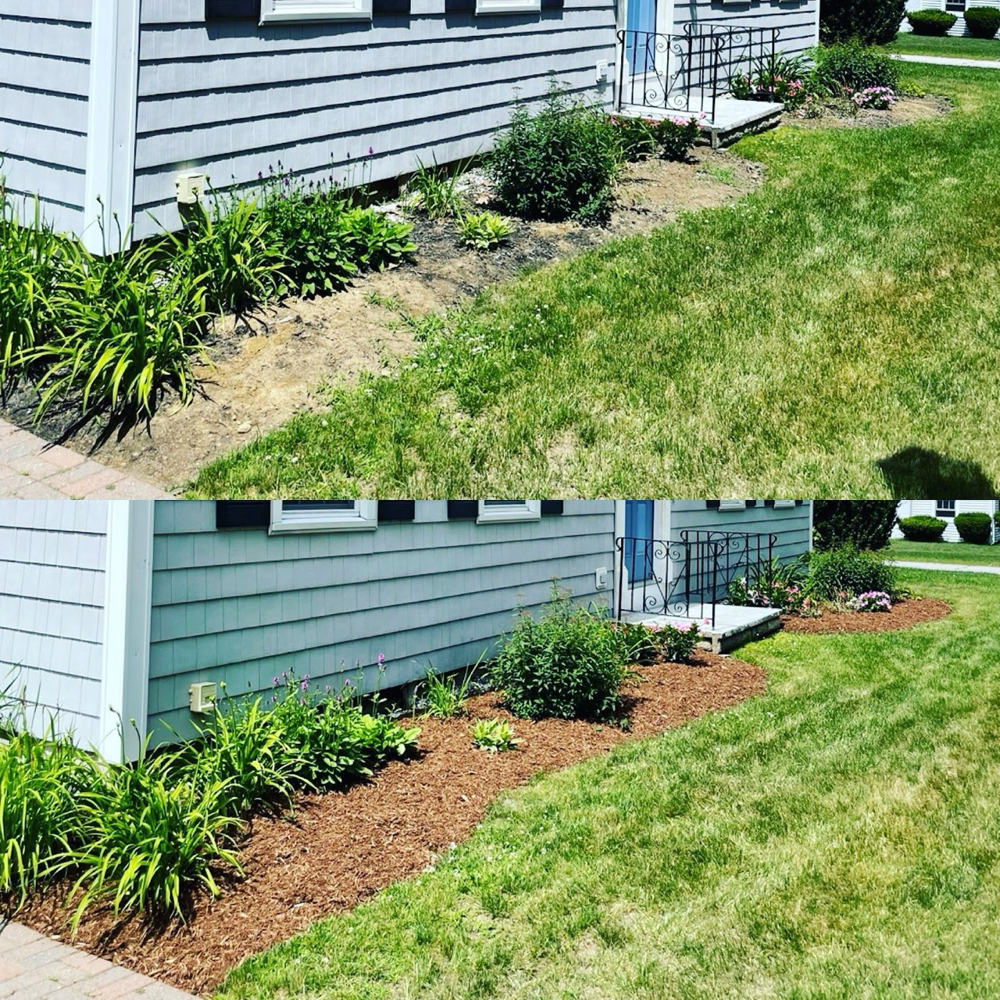
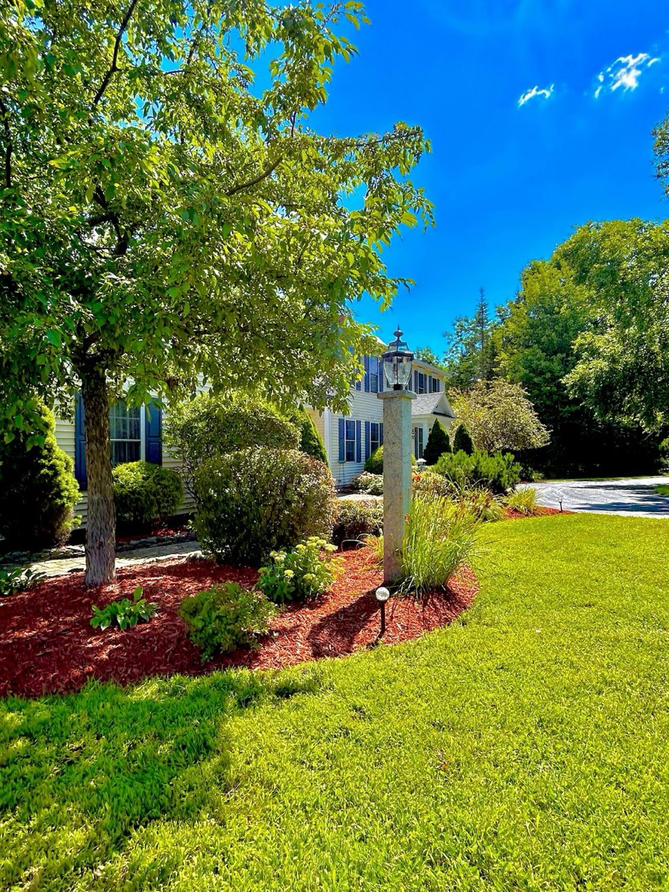

Crisp stripes, sharp edges and tidy beds — the kind of finish you notice from the street.
Regular service so the work gets done without you having to chase anyone down.
Mowing and mulch through the warm months, cleanups in the shoulder seasons, plowing in winter.
Weekly and bi-weekly cuts with clean lines, kept consistent all season.
Fresh mulch, defined edges and weeded beds that frame the house.
Leaf cleanup, debris removal and a fresh start at both ends of the season.
Larger commercial lots mowed and maintained to a clean, professional standard.
Driveways and lots cleared through the Maine winter so you stay open and accessible.
Trimming, brush removal and hauling away what the cleanup leaves behind.
Lawns, beds and cleanups around Auburn.



Based in Auburn, ME — serving Auburn and the surrounding area.
| Mon | 8:00 AM – 5:00 PM |
| Tue | 8:00 AM – 5:00 PM |
| Wed | 8:00 AM – 5:00 PM |
| Thu | 8:00 AM – 5:00 PM |
| Fri | 8:00 AM – 5:00 PM |
| Sat | 8:00 AM – 12:00 PM |
| Sun | Closed |
580 Park Ave, Auburn, ME 04210
Call or text JP Lawn Care for mowing, mulch, cleanups or a plowing quote in Auburn.